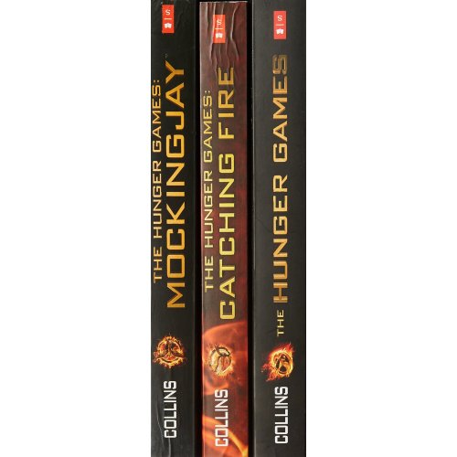

My favorite hobby is reading books. I can go to places thousands of miles away, just by the simple act of picking up a book. When I read, I feel like I'm actually in the book, facing challenges and solving mysteries alongside my favorite characters, who've slowly become my friends. On the last page of a book, when it's time to leave the unique world I enter through reading, I feel like I'm saying goodbye to my closest friends and family.
My Favorite Books

The Hunger Games Trilogy by Suzanne Collins
“Katniss, the girl who was on fire!”

The Ascendance Series by Jennifer A. Nielsen
“A person can be educated and still be stupid, and a wise man can have no education at all.”

The Maze Runner by James Dashner
“WICKED is good
”